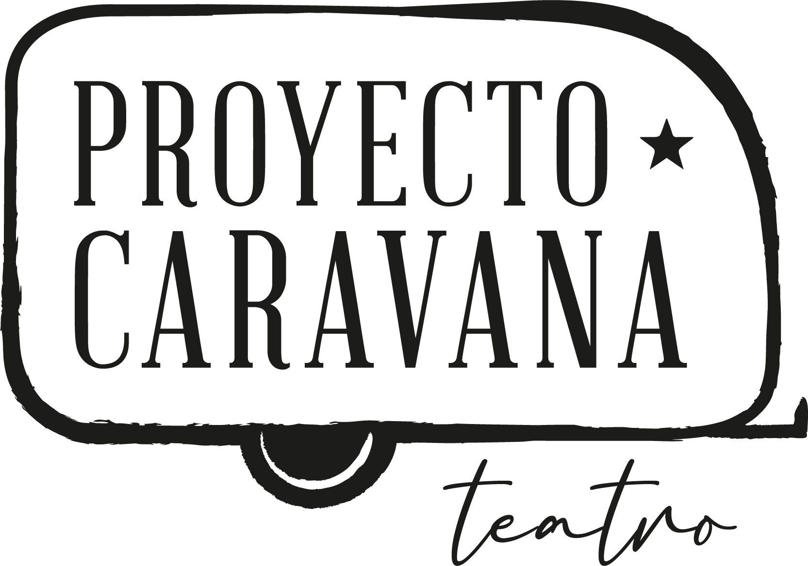
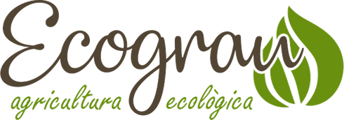

Tecnologia, educació ambiental i gestió forestal al servei del territori.
A L'Abelluco unim les eines digitals i el coneixement del medi natural per entendre i cuidar el territori. Ho fem des del món rural i amb els valors de l'economia social i solidària.
Què faig
-
Apps pròpies
Aplicacions per entendre i cuidar el territori, a Google Play (Android) i al navegador (web).
Les apps -
Desenvolupament a mida
Aplicacions multiplataforma i projectes d'electrònica amb plataformes com Arduino, micro:bit o Compluino.
Els serveis de tecnologia -
Assessorament en noves tecnologies
Ajuda per triar, implantar i aprendre a fer servir eines digitals, amb preferència pel programari lliure.
Més informació -
Educació ambiental
Disseny de programes, activitats i materials, i assessorament a equipaments d'educació ambiental.
Més informació -
Gestió del territori
Gestió forestal i del medi natural: inventaris, cartografia i SIG, i suport a la custòdia del territori.
Més informació
Les apps
-

Terra Bloc: el terreny, en un bloc que pots imprimir
Tria una parcel·la del Cadastre o dibuixa una zona a qualsevol lloc del món. Terra Bloc en fa un model 3D amb la imatge aèria i el converteix en una peça sòlida per a la impressora 3D, amb la mida en mil·límetres.
- Relleu de 5 m de l'IGN a Espanya i de ~30 m a la resta del món
- Ortofoto, color per altitud o aspecte de maqueta
- Sòlid tancat amb base, a l'escala que triïs
- Exportació a STL i OBJ amb Terra Bloc Pro
-

Terra Rutes: les teves rutes, sobre el relleu
Obre tracks GPX o KML i mira'ls sobre el mapa i el relleu 3D, amb el perfil d'altitud acolorit per pendent. Uneix-los, edita'ls i corregeix-ne les altituds amb el model del terreny.
- Distància, desnivells i temps estimat MIDE
- Unir tracks en l'ordre i el sentit que toca
- Moure punts, retallar i netejar els salts del GPS
- Exportació a GPX per al GPS, el mòbil o Wikiloc
-

Terra Parcel·les: les teves parcel·les, sempre a mà
Desa les parcel·les del Cadastre una sola vegada, amb notes, fotos i etiquetes, agrupa-les en finques i obre-les a les altres apps Terra.
- Per referència cadastral o tocant-la al mapa
- Superfície, cultius i enllaç a la Seu del Cadastre
- Finques i agrupacions, amb la superfície total
- Perímetre en GPX o KML per recórrer-lo al camp
Han confiat en L'Abelluco
-

-

Formo part de
Parlem del teu projecte
Explica'm què necessites i et respondré amb una proposta clara i un preu just.